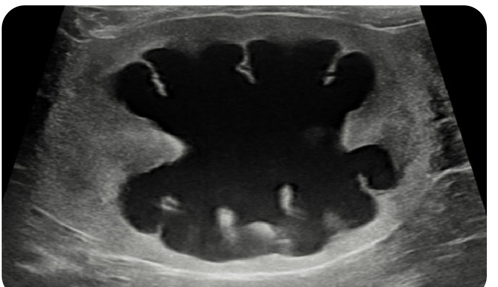
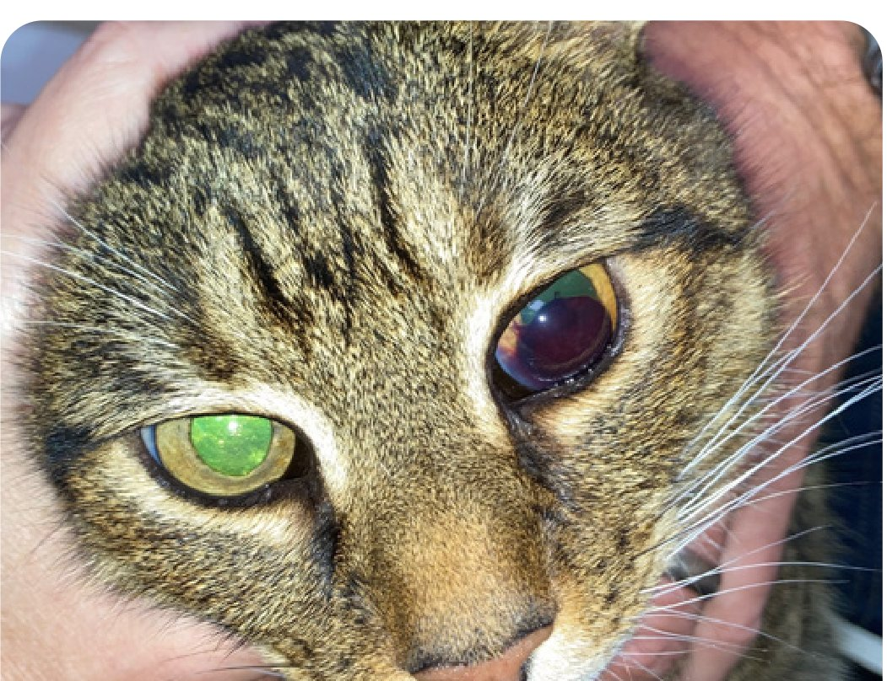

重點摘要
- 分期別只看 creatinine：SDMA 對早期腎功能下降更敏感，肌肉量明顯流失的貓 creatinine 會被低估，此時應以 SDMA 為準分期，避免病程被誤判為較輕。
- 治療是分期＋分亞期的疊加：依 creatinine/SDMA 分期後，還要再疊上蛋白尿與血壓分亞期一起決定治療強度，同一分期的貓治療計畫可能完全不同。
- 同一顆藥、不同適應症＝不同劑量，這是最容易搞混的地方：telmisartan 治療高血壓是 2 mg/kg，治療蛋白尿卻是 1 mg/kg；benazepril 治療蛋白尿也是 q12h 而非高血壓的 q24h——開藥前務必先確認治療目標。
- 併發症處置有精確劑量與監測排程，不是憑經驗抓：低血鉀、便秘、貧血（darbepoetin／molidustat 流程）都有明確的起始劑量與調整依據，直接套用比臨床經驗判斷更安全。
- 病程穩定與否，對存活期影響比分期本身更大：病情穩定的 CKD 貓中位存活期約 894 天，持續惡化者僅約 287 天——回診時「有沒有惡化」和「現在第幾期」一樣重要。
總覽與腎臟功能
資料整理自《2026 iCatCare 貓慢性腎病診斷與照護共識指南》（JFMS，2026/9/4 發布），這是取代沿用十年的 2016 ISFM 舊版標準的完整更新版，強調團隊照護、情緒福祉與居家照護工具。IRIS 分期系統的數值標準本身沿用 2019 修訂版，並未在這次改版中變動。
腎臟在做什麼
貓的兩顆腎臟由數十萬個腎元（nephron）組成，每個腎元由腎絲球（過濾用的「篩子」）與腎小管組成，共同把血液過濾成尿液。除了製造尿液，腎臟還負責：過濾血液中的毒素、維持體液平衡與預防脫水、維持正常血壓、協助鈣質平衡、維持正常紅血球數量、產生荷爾蒙、維持電解質平衡。腎臟代償能力很強，即使已經喪失部分功能，貓也可能沒有明顯症狀——這也是為什麼很多病例確診時腎病已經進展一段時間。
多數病例找不到明確病因。已知的病因包括：遺傳性疾病（波斯貓及相關品種的多囊腎）、結石、感染、毒素、腫瘤；腎外因素如高血鈣、高血壓也會影響腎臟。
早期可能只有體重減輕；隨病程進展可出現：多渴多尿、食慾下降或挑食、嗜睡、嘔吐、被毛品質變差、便秘（糞便乾硬、排便次數少）。
CKD 可發生於任何年齡，但 7 歲以上貓更常見；老年貓常同時合併退化性關節炎（DJD）、牙科疾病、甲狀腺機能亢進等其他老年病，這些共病也可能加重臨床表現，需要一併評估。
診斷與篩檢
CKD 診斷需要血液與尿液檢驗合併判讀，不能只看單一數值。
尿素氮、creatinine 因腎臟過濾功能下降而升高；也常見低血鉀、貧血（紅血球數量下降）、高血鈣與高血磷。
CKD 貓產生的尿液比重偏低（稀薄、顏色淡）。尿液應同時檢查蛋白質、細菌、結晶等項目，結果需搭配血液數值一起判讀。
部分病例需要影像檢查（X 光或超音波）進一步評估腎臟型態、協助找出病因（例如結石阻塞造成腎盂擴張積水）。確診後即進入分期（staging）流程（見下節），才能擬定治療與監測計畫。

- 腎臟腫大（renomegaly）
- 年輕病患出現 CKD
- 持續且嚴重的蛋白尿（UP/C >2.0）且無氮血症
- CKD 病患蛋白尿持續惡化
- 急性腎損傷（AKI），切片可能提供預後判斷參考
IRIS 分期與分亞期
國際腎臟權益學會（IRIS）制定的分期系統，是目前貓犬 CKD 分期的國際標準做法。先以 creatinine／SDMA 分「期」（1–4），再依蛋白尿與血壓分「亞期」，兩者合起來才是完整分類，據此擬定治療與監測強度。
分期須以穩定、有適當水分（euhydrated）的病患，至少 2 次檢測為基礎，creatinine 與 SDMA 變化 <20–25% 才視為 GFR 相對穩定、可用於分期。單次數值不足以分期。
一、依 Creatinine／SDMA 分期
| 期別 | 犬 Creatinine µmol/L（mg/dL） | 貓 Creatinine µmol/L（mg/dL） | SDMA µg/dL | 備註 |
|---|---|---|---|---|
| Stage 1 | <125（<1.4） | <140（<1.6） | 犬 <18／貓 <18 | Creatinine 正常或僅輕微腎功能異常（尿液濃縮能力不足、腎臟觸診／影像異常、腎源性蛋白尿等）。SDMA 持續 >14 µg/dL 可用於診斷早期 CKD |
| Stage 2 | 125–250（1.4–2.8） | 140–250（1.6–2.8） | 犬 18–35／貓 18–25 | 輕度氮血症，臨床症狀通常輕微或無 |
| Stage 3 | 251–440（2.9–5.0） | 251–440（2.9–5.0） | 犬 36–54／貓 26–38 | 中度氮血症，可能出現多種腎外症狀，程度不一 |
| Stage 4 | >440（>5.0） | >440（>5.0） | 犬 >54／貓 >38 | 尿毒症危象風險逐漸升高 |
來源：IRIS Staging of CKD (modified 2019)，International Renal Interest Society。
SDMA 對早期腎功能下降較敏感、較不受肌肉量流失影響。貓若 SDMA 持續 >18 µg/dL 但 creatinine 落在 Stage 1 範圍，應以 Stage 2 分期治療；SDMA 持續 >25 µg/dL 但 creatinine 落在 Stage 2 範圍，應以 Stage 3 分期治療；SDMA 持續 >38 µg/dL 但 creatinine 落在 Stage 3 範圍，應以 Stage 4 分期治療。
二、依蛋白尿分亞期
目標是找出腎源性蛋白尿（需先排除腎前性、腎後性原因）。建議測 UP/C（尿蛋白／肌酸酐比值），標準尿液試紙偽陽性率高，不建議單獨依賴。理想上以間隔至少 2 週的兩次尿液採檢為準。
| UP/C 數值 | 犬 | 貓 | 分亞期 |
|---|---|---|---|
| <0.2 | <0.2 | Non-proteinuric（無蛋白尿） | |
| 0.2–0.5 | 0.2–0.4 | Borderline proteinuric（臨界蛋白尿） | |
| >0.5 | >0.4 | Proteinuric（蛋白尿） |
持續處於臨界值的病例建議 2 個月內複檢重新分類。Stage 3、4 病例蛋白尿反而可能減少（不代表病情變輕），判讀時需留意。任何降蛋白尿治療的效果都要用 UP/C 追蹤。
三、依血壓分亞期
需讓貓適應測量環境後多次測量，理想上在不同天的回診分別測量；同一次回診測量則至少間隔 2 小時。以收縮壓（systolic blood pressure）判斷未來標的器官（眼睛、腦、心臟、腎臟）受損風險：
| 收縮壓 mmHg | 血壓分亞期 | 未來標的器官受損風險 |
|---|---|---|
| <140 | Normotensive（正常血壓） | 極低 |
| 140–159 | Prehypertensive（血壓偏高） | 低 |
| 160–179 | Hypertensive（高血壓） | 中 |
| ≥180 | Severely hypertensive（重度高血壓） | 高 |
「高血壓」分亞期需 1–2 週內多次測量確認持續性；「重度高血壓」同樣需 1–2 週內確認。已有標的器官受損證據（如眼底出血）時，單次測量即可分亞期。
貓，治療前：Creatinine 2.3 mg/dL、SDMA 22 µg/dL、UP/C 0.32、收縮壓 200 mmHg → IRIS Stage 2，臨界蛋白尿，重度高血壓
降壓治療後：Creatinine 2.5 mg/dL、SDMA 24 µg/dL、UP/C 0.12、收縮壓 155 mmHg → IRIS Stage 2，無蛋白尿，血壓偏高（治療中）——分亞期要反映「治療後」的現況，並註記正在治療中。
依分期治療原則
治療分兩大類：延緩病程與改善生活品質／處理臨床症狀。Stage 1–2 幾乎沒有腎外症狀，治療重心在延緩病程；Stage 3 起腎外症狀逐漸增加、變嚴重，改善生活品質的治療重要性也隨之提高，到 Stage 4 時其重要性已超過延緩病程的治療。用藥時務必考慮照護者負擔——多重用藥本身就會影響生活品質與配合度，優先處理對貓最重要的問題。
部分建議用藥並未在所有地區核准用於貓，劑量屬於經驗性建議。使用前務必由主治獸醫師評估個別病患的風險效益，不建議未經評估直接套用。
每一期都要做的 5 件事（後續分期在此基礎上疊加）
依分期疊加的重點
| 分期 | 在前一期基礎上新增的重點 |
|---|---|
| Stage 1 | 上述 5 件事（不含飲食，飲食從 Stage 2 起才建議）；若 UP/C 或血壓異常，依第 5 節處理 |
| Stage 2 | 加入腎臟處方飲食；血磷限制（多數 Stage 2 貓血磷正常但 FGF23 已升高）；低血鉀補充；腸胃症狀（噁心／食慾下降／肌肉流失）用藥 |
| Stage 3 | 代謝性酸中毒矯正；貧血評估與治療；腸胃症狀藥物治療效果不佳或需長期補液時，考慮腸道餵食管；經腎臟代謝的藥物需視治療指數調整劑量 |
| Stage 4 | 強化防止蛋白質／熱量營養不良（考慮經皮胃造口餵食管）；強化預防脫水；懷疑腸胃道出血（黑便、缺鐵）時考慮 omeprazole；評估透析或腎臟移植 |
血磷目標隨分期調整
腎臟處方飲食（限磷飲食）是控制血磷的第一線治療，飲食限磷 4–6 週後血磷仍高於該分期目標，才加上磷結合劑。各分期的目標血磷（Table 3, 2026 guideline）：
| IRIS 分期 | 目標血磷 |
|---|---|
| Stage 1 | 無特定目標（尚無氮血症） |
| Stage 2 | 0.81–1.45 mmol/L（2.5–4.5 mg/dL） |
| Stage 3 | 0.81–1.63 mmol/L（2.5–5.0 mg/dL） |
| Stage 4 | 0.81–1.94 mmol/L（2.5–6.0 mg/dL） |
血磷 <1.45 mmol/L（<4.5 mg/dL）時測 FGF23：>400 pg/mL → 限磷飲食，目標把 FGF23 降到 <400；300–400 pg/mL → 先繼續監測；<300 pg/mL → 沒有證據支持限磷有效，繼續監測即可。血磷已 >1.45 mmol/L 則直接限磷飲食，達標後再測 FGF23 決定要不要加強限制。
先換腎臟處方飲食，4–6 週後複測：血磷已低於該分期目標上限 → 若血鈣正常就繼續現有飲食，每 6–12 週監測；血磷仍高於目標 → 測 FGF23，持續 >700 pg/mL 才需要加強限磷（換更限磷的飲食和／或加磷結合劑）。
高血鈣（併發於限磷飲食）
約 20% 貓確診 CKD 時已有離子鈣過高，另外約 26% 會在診斷後 12 個月內出現；換上限磷飲食後，約半數氮血症貓的血鈣會逐漸升高（機轉與 PTH 無關）。建議優先測離子鈣（iCa），而非總鈣——兩者相關性差，總鈣容易低估真正的高血鈣程度。
飲食鈣質 ≤200 mg/100 kcal 且 鈣磷比 <1.4:1（相對地，鈣磷比 1.9:1 容易誘發高血鈣）；補充奇亞籽 1–2 g/cat/天（浸泡 20 分鐘以上拌入濕食）也有幫助。其他選項包括雙磷酸鹽類藥物，或 cinacalcet（一種擬鈣劑，人醫用於治療 CKD 高血鈣，貓的資料有限但已有病例報告成功用於治療特發性高血鈣）。鈣質過高時應改選符合上述鈣磷比條件的腎臟飲食，而非直接停用限磷飲食。
脫水與輸液
所有分期都要確保隨時有新鮮飲水；一旦因任何原因造成臨床脫水／低血容，用等張多離子補充液（如乳酸林格氏液）靜脈矯正，之後再靠居家措施提升自主飲水量。不是每隻 CKD 貓都需要居家皮下輸液，但對其他方法仍持續脫水的貓耐受度普遍良好。
劑量 75–100 mL/cat，每 1–3 天一次，多數貓可耐受；理想上選低張溶液（半濃度乳酸林格氏液、0.45% 生理食鹽水、Normosol-M）以降低鈉負擔，但臨床上貓對其他等張晶體液也多能耐受無併發症；缺鉀的貓可在輸液中加 KCl 20–30 mEq／每 1000 mL 輸液。加溫輸液、給予零食分散注意力、操作動作俐落，都能提升貓的接受度。
常見併發症處置
依併發症分項整理具體用藥與監測方式，部分內容延續第 4 節的分期疊加邏輯。
全身性高血壓
目標把收縮壓降到理想 <140 mmHg，至少 <160 mmHg，以降低眼睛、腦、心臟等標的器官受損風險（有高達 80% 高血壓貓出現眼部標的器官損傷）。已有標的器官受損證據時不需等待血壓持續性確認即可直接治療。開始或調整用藥後 1–2 週評估效果。
| 藥物類別 | 藥物與劑量 | 備註 |
|---|---|---|
| 鈣離子通道阻斷劑 | amlodipine 0.125–0.25 mg/kg q24h（常用 0.625 或 1.25 mg/cat） | 單獨使用常已足夠；重度高血壓可能需到 0.5 mg/kg；副作用：低血壓、牙齦增生；穿皮劑型效果不如口服 |
| ARB | telmisartan 2 mg/kg q24h | 通常可降收縮壓 20–25 mmHg；若與 amlodipine 併用，telmisartan 起始劑量改為 ≤1 mg/kg q24h |
| ACE 抑制劑 | benazepril 0.5–1.0 mg/kg q24h／enalapril 0.25–0.5 mg/kg q24h／ramipril 0.125–0.25 mg/kg q24h | 不建議單獨用於治療高血壓（尤其收縮壓 >180 mmHg 時），可與 amlodipine 併用 |
明顯蛋白尿的病例可優先考慮以 telmisartan 作為起始降壓藥物；若已控制血壓但蛋白尿持續，可在 amlodipine 之外加上 ARB／ACE 抑制劑；合併用藥時需密切監測低血壓。
脫水或血容不足的不穩定貓不可貿然開始 CCB／RAAS 抑制劑，可能使腎絲球過濾率驟降。血壓穩定後每 3 個月追蹤一次，收縮壓 <120 mmHg 或出現無力、心搏過快等低血壓徵象都要避免。

蛋白尿
UP/C >0.4（IRIS「蛋白尿」分亞期）應以腎臟處方飲食＋RAAS 抑制劑治療；RAAS 抑制劑只用於非脫水、病情穩定的貓。降壓本身就能減少蛋白尿，高血壓貓應先把血壓控制到 <160 mmHg，再評估是否需要額外的抗蛋白尿藥物。
| 藥物 | 治療蛋白尿的劑量 |
|---|---|
| telmisartan | 1 mg/kg PO q24h（注意：治療蛋白尿與治療高血壓的劑量不同，高血壓劑量是 2 mg/kg） |
| benazepril | 0.25–0.5 mg/kg PO q12h，也有藥食一體劑型 |
| 用藥後時間 | 檢查項目 | 目的 |
|---|---|---|
| 1–2 週 | 臨床症狀、SBP、creatinine、鉀離子 | 評估耐受性；creatinine 上升 >25–30% 需考慮調整劑量 |
| 用藥／調藥後 4 週 | 臨床症狀、SBP、UP/C | 評估降蛋白尿效果 |
| 之後每 3 個月 | 臨床症狀、SBP、UP/C | 長期監測 |
UP/C 0.2–0.4 的貓進展為腎病、死亡率都比 UP/C <0.2 的貓高，但目前沒有證據證實抗蛋白尿藥物在此階段有效，部分臨床醫師仍會選擇用藥，屬於可選擇的處置。
可能造成低血壓、高血鉀、氮血症惡化，晚期 CKD 與脫水貓要特別小心；除了臨床監測外，也應依 Table 5 排程定期回診評估。
礦物質與骨骼失衡（高血磷）
多數 Stage 2 貓血磷正常，但 FGF23（纖維母細胞生長因子 23）已經升高——這是比血磷更早出現異常的指標，詳細分期目標與 FGF23 輔助決策流程見第 4 節。
含鈣磷結合劑（如碳酸鈣±甲殼素）便宜有效，但高血鈣貓應避免使用；不含鈣的替代選項包括氫氧化鋁、sevelamer、碳酸鑭。磷結合劑須徹底混入每一餐、每日總劑量依餐次分配——因為結合劑必須跟飲食中的磷同時存在才有效。
低血鉀
高分期 CKD 貓常見低血鉀，與攝取不足、尿液流失增加及 RAAS 活化有關；與嗜睡、食慾不振、肌肉病變（頸部腹屈、蹠行姿勢）及便秘有關。部分臨床醫師會在血鉀處於正常低值時就開始補充，目標維持血鉀 >4 mmol/L，便秘的 CKD 貓尤其重要。
穩定、輕度低血鉀貓可换用鉀含量較高的飲食；中重度低血鉀給予口服potassium gluconate或potassium citrate 1–4 mEq/cat q12h（依反應調整）；合併酸中毒時 potassium citrate 較佳（鹼化效果較強）；嚴重失代償者需住院靜脈補鉀，之後再轉口服居家補充。
腸胃症狀（噁心、嘔吐、食慾不振）
症狀在高分期 CKD 更常見；Stage 1–2 貓若出現明顯噁心／嘔吐，應優先考慮是否有其他共病，而非直接歸因於 CKD。食慾下降應盡早積極處理，並同時排查／矯正脫水、便秘、低血鉀、酸中毒、貧血等會加重食慾不振的因素。
| 藥物 | 劑量 | 適應症 | 常見副作用 |
|---|---|---|---|
| Maropitant | 1 mg/kg SC／IV／PO q24h | 預防與治療噁心、嘔吐 | 皮下注射部位疼痛 |
| Mirtazapine | 2 mg/cat PO 或穿皮 q24h（高分期 CKD 因腎清除率下降改 q48h） | 止吐＋食慾促進 | 發聲躁動；穿皮劑型局部紅斑 |
| Ondansetron | 0.1–1 mg/kg IV（慢）／IM／SC／PO q6–12h | 預防與治療噁心、嘔吐 | 腸胃道反應、便秘，少見過敏反應 |
| Omeprazole | 1 mg/kg PO q12h | 強烈懷疑／確診腸胃潰瘍 | 厭食、嘔吐、腹瀉 |
| Capromorelin | 2 mg/kg PO q24h | 食慾促進劑 | 高血糖、嘔吐、流涎、嗜睡、心搏過慢與低血壓 |
此表為指南專家小組共識劑量，實際治療仍由主治獸醫師判斷。持續性厭食、高分期 CKD 或 ACKD 發作期間，可考慮放置餵食管（如食道造口管），同時有助維持水分與給藥。
脫水與便秘
CKD 貓慢性脫水常導致大腸代償性回收水分而便秘，低血鉀、尿毒素、飲食與磷結合劑也可能加重。處理原則：先矯正脫水與低血鉀，再開始藥物治療；同時排查是否因 DJD 疼痛而不願如廁、貓砂盆環境是否需要優化。
代謝性酸中毒
可能比過去認知的更常見，是加速病程惡化的風險因子。腎臟處方飲食本身設計上會減少酸負荷，部分貓仍需額外鹼化：口服potassium citrate 40–75 mg/kg q12h（同時處理低血鉀時的優選）或sodium bicarbonate 10–12 mg/kg q8–12h，目標維持血中碳酸氫根 >16 mmol/L。
貧血
PCV <25%，或持續處於 25–28% 超過 1 個月，應開始治療；貧血會造成嗜睡、食慾不振，也可能經缺氧刺激纖維化、加速病程惡化。
起始 0.75–1 µg/kg SC，每週一次，PCV 未達 30% 前每週監測 PCV 與 SBP；達標後改隔週一次維持 PCV 30–40%；PCV >40% 需暫停或減量（如減 25%）／延長給藥間隔。
5 mg/kg PO q24h，一個療程最長 28 天（部分地區法規要求療程間休息 7 天），依 PCV 反應重複療程，目標維持 PCV 28–40%；反應不佳需排查發炎、鐵儲存不足或藥物交互作用，可能需改用 darbepoetin。
兩者都建議合併鐵補充：iron dextran 50 mg/cat IM q3–4 週，或口服 ferrous sulphate 50–100 mg/cat q24h、ferrous fumarate 30–60 mg/cat q24h；同化類固醇沒有證實的效益，反而可能有害，不建議使用。
高分期 CKD 病患經腎臟代謝清除的藥物需特別留意劑量調整，避免蓄積中毒；治療優先順序也應隨分期轉移——晚期以控制症狀（止吐、促食慾）優先於延緩病程（嚴格限磷）的治療。
常見共病與麻醉考量
CKD 貓常合併甲狀腺機能亢進、慢性疼痛、糖尿病等共病，用藥與治療決策需一併考量彼此的交互作用。
CKD 併發甲狀腺機能亢進
兩者並存比例高達 15–51%；常見迷思是「治療甲亢會傷腎、應該少治療一點以保護腎臟」——這是錯誤觀念，未受控的甲亢本身就會惡化腎功能與心血管狀態，應積極治療。Stage 3–4 貓建議降低起始劑量，例如 thiamazole 1 mg PO q12h，並避免矯枉過正造成醫源性甲狀腺低能症（同樣會加速腎功能惡化）。
CKD 併發慢性疼痛（DJD 等）
NSAID 只能用於穩定期 CKD——定義為過去至少 2 個月體重與 creatinine 變化不大、共病已控制；Stage 4、脫水或病情不穩定的貓應避免使用。替代止痛選項：
CKD 貓劑量尚未明確建立，但腎功能下降會使血中濃度偏高，需留意鎮靜副作用並視反應調整。
frunevetmab（抗 NGF 單株抗體）、tramadol、amantadine、buprenorphine；居家皮下 ketamine 0.5 mg/kg 每月一次也是可考慮的選項。
CKD 併發糖尿病
新診斷、合併蛋白尿的糖尿病貓，SGLT2 抑制劑可能比胰島素更具腎臟保護效益，可優先考慮（詳見貓糖尿病照護指南）；仍須排除 SGLT2i 使用禁忌症（如已有 DKA／eDKA 病史、明顯脫水）。
CKD 貓的麻醉考量
飲食與居家照護
飲食調整與藥物治療是 CKD 管理的基礎，居家環境的調整同樣是治療的一部分，不是附加建議。
腎臟處方飲食
特點是降低磷含量、中度限制蛋白質，並額外添加鉀、抗氧化物與 omega-3 脂肪酸；乾糧、濕糧皆有，已證實可延長存活期、減緩病程惡化。轉換飲食應漸進式，至少 1–2 週，新舊食物混合、逐步提高新飲食比例；貓咪不舒服（含住院期間）時不要換飲食，等狀況穩定、進食穩定後再轉換。若貓拒絕腎臟飲食，可考慮磷結合劑作為替代方案，或部分餐食用腎臟飲食、其餘維持原食物。
「五大支柱」居家環境調整
提供多處可預期、安全、容易到達的休息區，遠離人多的區域；行動不便或有 DJD 疼痛的貓需要斜坡或階梯輔助。
CKD 貓排尿飲水更頻繁，貓砂盆與水源要多處放置（每種資源至少 2 個），低邊貓砂盆搭配柔軟砂material，勤加清潔。
即使年老患病的貓也能從活動中受益；短時間、可預期的遊戲時段，搭配止痛藥物可幫助有 DJD 的貓參與輕度活動。
讓貓自己選擇互動的方式與長短，不強迫抱起，緩慢靠近並輕聲說話，允許貓隨時退出互動。
支柱 5：尊重貓咪感官——避免濃烈氣味（香水、空氣芳香劑），可考慮費洛蒙產品；加溫食物提升香氣促進食慾；避免突然巨響驚嚇。
維持水分攝取
CKD 貓尿液濃縮能力下降，容易流失的水分比攝取的多，進而可能造成便秘、精神不振。可用飲水噴泉、多處水碗、食物加水（貓接受的話）或風味水產品增加飲水量。部分病例需要皮下輸液維持水分：
居家監測
CKD 通常緩慢進展，需要定期回診調整治療，回診頻率依貓咪狀況與分期而定。照護者可協助記錄：定期在家秤體重（可用寵物秤或嬰兒秤，及早發現體重變化）、必要時在家採集尿液樣本帶回診所檢驗（使用不吸水貓砂＋吸管／針筒收集，多貓家庭可能需要暫時隔離患貓）。
監測與預後
CKD 是進展性疾病，定期回診與結構化監測是延緩惡化、及早介入併發症的關鍵。
回診頻率
診斷初期或治療方案剛調整時，建議每 2–4 週回診一次；病情穩定後可延長至每 3–6 個月一次。
每次回診檢查項目
精神活力、食慾、有無嘔吐、如廁狀況（排尿排便）、飲水量變化、藥物／皮下輸液配合度與居家操作細節。
收縮壓測量、體重與 BCS（體態評分）／MCS（肌肉評分）、眼底檢查、完整理學檢查。
心腎症候群（cardiorenal syndrome）：CKD 與心臟疾病可互相影響、互為因果，回診時如發現心雜音、呼吸型態改變等徵象應一併評估心臟狀況。
預後
病程是否穩定對存活期影響很大：持續惡化的 CKD 病患中位存活期約 287 天，相較之下病情穩定的 CKD 病患中位存活期約 894 天——凸顯及早發現病程惡化、積極調整治療的重要性。
縮寫對照表
複習前可以先對照一下本頁用到的縮寫全名。
| CKD | Chronic Kidney Disease（慢性腎病） |
| IRIS | International Renal Interest Society（國際腎臟權益學會，制定本頁分期系統的組織） |
| SDMA | Symmetric Dimethylarginine（對稱性二甲基精胺酸，早期腎功能指標） |
| UP/C | Urine Protein-to-Creatinine ratio（尿蛋白／肌酸酐比值） |
| DJD | Degenerative Joint Disease（退化性關節炎） |
| RAAS | Renin-Angiotensin-Aldosterone System（腎素－血管收縮素－醛固酮系統） |
| ACEI | Angiotensin-Converting Enzyme Inhibitor（血管收縮素轉化酶抑制劑） |
| ARB | Angiotensin Receptor Blocker（血管收縮素受體阻斷劑） |
| CCB | Calcium Channel Blocker（鈣離子通道阻斷劑） |
| FGF23 | Fibroblast Growth Factor 23（纖維母細胞生長因子23，礦物質骨骼失衡的早期指標） |
| PCV | Packed Cell Volume（血球容積比，即血比容） |
| SBP | Systolic Blood Pressure（收縮壓） |
| MAP | Mean Arterial Pressure（平均動脈壓） |
| NSAID | Non-Steroidal Anti-Inflammatory Drug（非類固醇消炎止痛藥） |
| HIF-PHI | Hypoxia-Inducible Factor Prolyl-Hydroxylase Inhibitor（缺氧誘導因子脯胺醯羥化酶抑制劑，molidustat 所屬藥物類別） |
| BCS／MCS | Body／Muscle Condition Score（體態評分／肌肉評分） |
練習題
以臨床情境題呈現，涵蓋分期判讀、用藥決策與居家照護的實際問題，先自行作答再點「顯示答案」核對。
應以 SDMA 為準分期為 Stage 2（SDMA 持續 >18 µg/dL 但 creatinine 落在 Stage 1 範圍時即應以 Stage 2 治療）。此貓又合併明顯肌肉流失：creatinine 是肌肉代謝產物，肌肉量下降會使 creatinine 假性偏低，低估實際腎功能惡化程度；肌肉流失明顯的病患，分期判讀應優先參考 SDMA 而非 creatinine。
不建議單純調高劑量：telmisartan 治療蛋白尿的建議劑量是 1 mg/kg q24h，本例因高血壓已使用 2 mg/kg，劑量本身已高於蛋白尿適應症所需，再往上加不是解方，應考慮改採／併用 benazepril（0.25–0.5 mg/kg q12h）等其他 RAAS 抑制劑，或重新評估是否有其他造成蛋白尿的共病、是否需要腎臟切片。監測上：調藥後 1–2 週追蹤臨床症狀／SBP／creatinine／鉀離子（creatinine 上升 >25–30% 需考慮調整），4 週追蹤 UP/C 評估降蛋白尿效果，之後每 3 個月長期監測。
telmisartan 起始劑量應降到 ≤1 mg/kg q24h，而非單獨使用時的 2 mg/kg，因為兩種降壓藥合併使用有加成效果，直接用全劑量容易造成低血壓（SBP <120 mmHg、無力、心搏過快）。用藥後 1–2 週需追蹤血壓與腎功能，Stage 4 貓本身對脫水／血容不足的耐受度差，更要留意降壓帶來的 GFR 驟降風險。
先矯正脫水與低血鉀（口服 potassium citrate 或 gluconate 1–4 mEq/cat q12h；若同時有酸中毒傾向，potassium citrate 因兼具鹼化效果更優先），因為低血鉀本身就會加重便秘。同時加上口服滲透性軟便劑 PEG 3350（1/8–1/4 茶匙 q12–24h），耐受度通常優於單靠纖維（南瓜泥／洋車前子）；若這些都無效，再加第二線腸胃蠕動促進劑 cisapride 1 mg/kg PO q8h。也別忘了排查是否有 DJD 疼痛導致不願如廁、貓砂盆環境是否需要優化。
飼主的給藥限制（無法每週回診注射）較適合選口服 molidustat（HIF-PHI）5 mg/kg PO q24h，一個療程最長 28 天（部分地區法規要求療程間休息 7 天），依 PCV 反應決定是否重複療程，目標維持 PCV 28–40%；相對地 darbepoetin 起始需 0.75–1 µg/kg SC 每週皮下注射，未達標前每週追蹤，不符合本例的照護條件。兩者都建議合併鐵補充（如口服 ferrous sulphate 50–100 mg/cat q24h），若反應不佳需排查發炎或鐵儲存不足。
這是常見迷思：未受控的甲亢本身會惡化腎功能與心血管狀態，並非治療甲亢傷腎，應該積極治療而非拖延。但 Stage 3–4 貓建議降低起始劑量，例如 thiamazole 1 mg PO q12h（低於一般起始劑量），並在治療後密切追蹤腎功能與甲狀腺數值，避免矯枉過正造成醫源性甲狀腺低能症（同樣會加速腎功能惡化）。
需先確認是否符合「穩定期 CKD」：過去至少 2 個月體重與 creatinine 變化不大、共病已控制，且非 Stage 4／脫水／病情不穩定，才能謹慎使用 NSAID，並持續監測腎功能。若不符合穩定條件，可考慮 gabapentinoids（CKD 貓劑量未明確建立，需留意腎功能下降使血中濃度偏高的鎮靜風險）、frunevetmab、tramadol、amantadine、buprenorphine，或居家皮下 ketamine 0.5 mg/kg 每月一次。